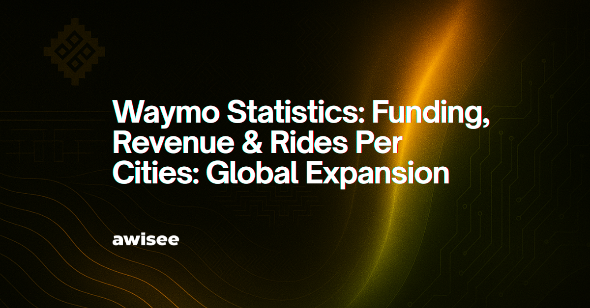

Waymoは2009年にGoogleの自動運転車プロジェクトとして始まり、研究から商用運営へと転換した。2018年にはフェニックスで安全運転員なしの初の商用ロボタクシーサービスをローンチし、有償ライドヘイリング事業に参入した。
2020年から2024年の間に、WaymoはAlphabet・Fidelity・T. Rowe Priceなどの投資家から計111億ドルの外部資金を調達した。2024年10月の資金調達ラウンド後、同社のバリュエーションは450億ドルを超え、世界で最も資本力のある自律走行車オペレーターの一つとなった。このバリュエーションは理論的な予測ではなく、実際の運営収益を反映したものである。
週あたりの有償乗車数は指数関数的な成長を示している。
Waymoの平均乗車料金は20.43ドル（Lyftの14.44ドルと比較）であり、2025年末時点で年間収益ランレートは4億ドルを超えると推計される。
2018年に初めて商用ローンチ。ライダーオンリー走行距離は5,650万マイル。
2024年6月に一般公開。ライダーオンリー走行距離は3,880万マイル。2024年末にはLyftと同等の市場シェアを達成した。
2024年11月にローンチ。120平方マイル超のサービスエリア。ライダーオンリー走行距離は2,547万マイル。
Uber経由でアクセス可能。ライダーオンリー走行距離は634万マイル。サービスゾーン内での乗車数の約20%を占める。
2025年6月にローンチ。Uber限定での予約受付。
Waymoは約2,500台の自律走行車を運用しており、主にJaguar I-PACEを使用している。ハードウェアと車両のコストは1台あたり約17万5,000ドルに達する。将来のプラットフォームにはZeekr RTとHyundai IONIQ 5が含まれる予定である。
フリートは累計1億2,700万マイル以上のライダーオンリー走行を完了しており、人間ドライバーと比較して安全性の優位性が示されている。
Waymoはデトロイト・ラスベガス・サンディエゴ・ダラス・マイアミ・ワシントンD.C.・デンバー・シアトル・ナッシュビルの9都市への米国内展開を発表した。さらにロンドンと東京での国際的なテストも開始する予定である。